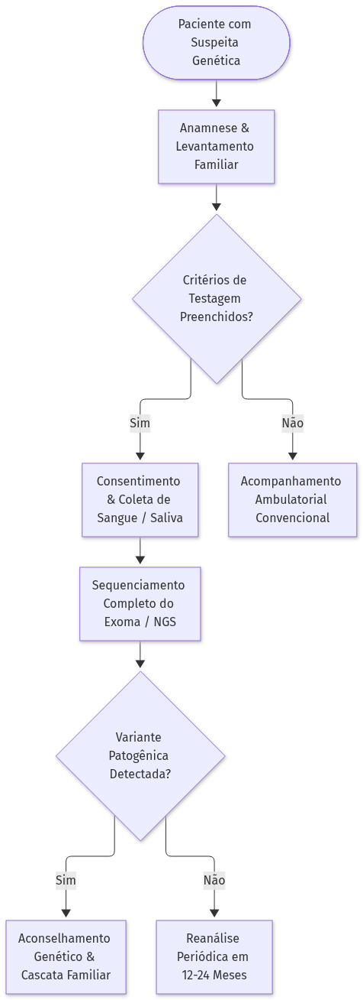
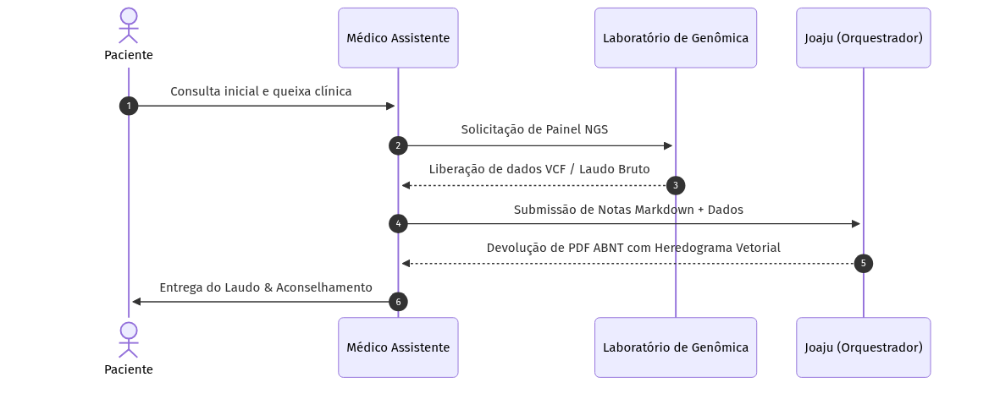
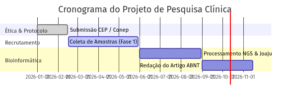

DIAGRAMAS DECLARATIVOS KROKI
Motor mermaid — Diagramas e Fluxos
O motor mermaid renderiza fluxogramas, sequências, diagramas de classe, máquinas de estado e gráficos de Gantt via Kroki com Chromium Headless. As figuras são rasterizadas em alta resolução e ajustadas harmoniosamente às margens da página.
⚙️ Diretivas de Configuração (%%)
| Diretiva | Sinônimos | Tipo | Padrão | Descrição |
|---|---|---|---|---|
layout.width |
width |
String | 75% |
Largura relativa do diagrama na mancha impressa (ex.: 80%, 14cm). |
layout.max_width |
max-width |
String | 500pt |
Largura máxima em pontos tipográficos para prevenir overflow. |
src |
file |
String | - | Importa código Mermaid a partir de arquivo .mmd anexo. |
🧪 Exemplos Práticos
1. Fluxograma de Decisão Clínica (Flowchart)
Markdown (mermaid flowchart)
Resultado da Renderização

```mermaid
%% width=85% max-width=550pt
graph TD
A([Paciente com Suspeita Genética]) --> B[Anamnese & Levantamento Familiar]
B --> C{Padrão Familiar Evidente?}
C -->|Sim| D[Painel NGS Direcionado]
C -->|Não / Inconclusivo| E[Sequenciamento Completo do Exoma - WES]
D --> F[Interpretação de Variantes ACMG]
E --> F
F --> G{Variante Patogênica?}
G -->|Confirmada| H([Laudo Molecular & Aconselhamento])
G -->|VUS / Negativo| I([Seguimento Clínico & Reavaliação])
```2. Diagrama de Sequência de Atendimento (Sequence Diagram)
Markdown (mermaid sequence)
Resultado da Renderização

```mermaid
%% width=90% max-width=600pt
sequenceDiagram
autonumber
actor P as Paciente
participant M as Médico Assistente
participant L as Laboratório de Genômica
participant S as Sistema Joaju
P->>M: Consulta inicial e consentimento
M->>L: Envio de amostra e requisição NGS
L->>L: Sequenciamento e chamada de variantes
L-->>M: Liberação dos dados FASTQ/VCF
M->>S: Processamento da nota clínica e heredograma
S-->>M: Emissão de relatório formatado ABNT
M->>P: Entrega de laudo e conduta clínica
```3. Cronograma de Projeto de Pesquisa (Gantt Chart)
Markdown (mermaid gantt)
Resultado da Renderização

```mermaid
%% width=95% max-width=650pt
gantt
title Cronograma do Projeto de Pesquisa Clínica
dateFormat YYYY-MM-DD
section Ética & Coleta
Aprovação CEP/Conep :done, des1, 2026-01-01, 2026-02-28
Recrutamento de Famílias :active, des2, 2026-03-01, 2026-06-30
section Laboratório
Extração & NGS : des3, 2026-07-01, 2026-09-30
section Análise & Publicação
Validação Pedtools/Joaju : des4, 2026-10-01, 2026-11-15
Escrita do Artigo Final : des5, 2026-11-16, 2026-12-31
```